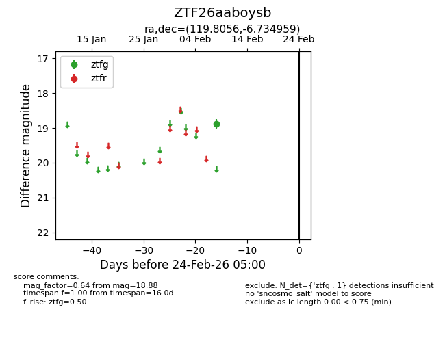
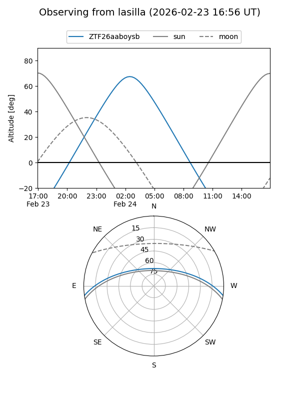
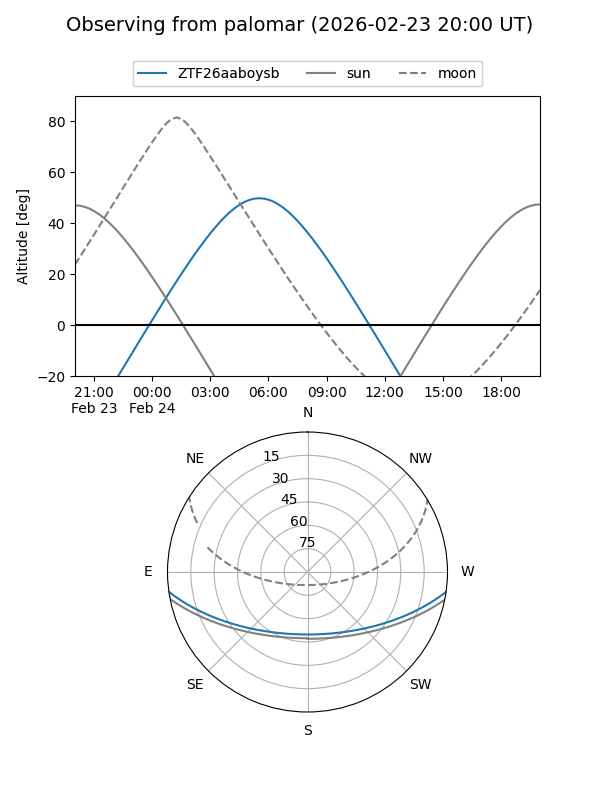

ZTF26aaboysb
Target ZTF26aaboysb at 2026-02-24 09:08
Aliases and brokers:
FINK: link
Lasair: link
ALeRCE: link
alt names
ZTF26aaboysb (ztf,fink_ztf)
Coordinates:
equatorial (ra, dec) = 119.8056,-6.73496
equatorial (HMS+DMS) = 07:59:13.35,-06:44:05.85
galactic (l, b) = (226.9040,+11.77922)
Flags:
Photometry:
last ztfg=18.88
1 ztfg detections
Lightcurve

Visibility


Additional plots